Iteration versus Rekursion
Contents
Rekursion in der Informatik:
Einen Funktion f ist rekursiv wenn sie sich selbst aufruft. Die Funktion heißt indirekt-rekursiv wenn sie sich selbst aufruft über den Umweg einer anderen Funktion (oder mehrerer anderer Funktionen).
Beispiel einer indirekten Rekursion:
foo ---> bar ---> foo
ruft auf ruft auf
Entscheidende Eigenschaften der Rekursion
- Jeder Aufruf einer rekursiven Funktion f hat sein eigenes Set von lokalen Variablen, d.h. der rekursive Aufruf hat die gleichen Anweisungen auszuführen, aber er hat seine eigenen Daten. Betrachten wir z.B. die rekursive Funktion
def f(n):
r = f(n-1)
... # weiterer Code
return r
- Für ein gegebenes n erhalten wir die Aufrufkette:
f(n) 1.Ebene
f(n-1) 2.Ebene
f(n-2) 3.Ebene
...
- Die Funktionsaufrufe der verschiedenen Ebenen werden so ausgeführt, als ob wir für jede Ebene eine eigene Funktion f1(n1), f2(n2), f3(n3) usw. definiert hätten:
f1(n1) 1.Ebene ---> n1 = n
f2(n2) 2.Ebene ---> n2 = n1-1
f3(n3) 3.Ebene ---> n3 = n2-1 = n1-2 = n-2
...
- Die Funktionen f1(n1), f2(n2), f3(n3) enthalten alle den gleichen Code, aber mit unterschiedlich benannten Variablen n1, n2, n3. Durch diese Umbenennungen sollte die obige Aussage deutlich werden.
- Jede rekursive Funktion muß mindestens einen nicht-rekursiven Zweig haben. Dieser Zweig wird als Basisfall oder Rekursionsabschluss bezeichnet.
- Jeder rekursive Aufruf muß über endlich viele Stufen auf einen Basisfall zurückgeführt werden, denn sonst erhält man eine Endlosrekursion (und das ist fast so übel wie eine Endlosschleife -- "fast" deshalb, weil die Endlosrekursion spätestens dann abbricht wenn der Speicher voll ist --> siehe Übung 8 Aufgabe 2a).
- Die Anzahl der rekursiven Aufrufe bis zum Rekursionsabschluss bezeichnet man als Rekursionstiefe d.
- Jede rekursive Funktion kann in eine iterative Funktion umgewandelt werden, die statt rekursiver Aufrufe eine Schleife enthält. Wir beschreiben dies unten anhand von Beispielen.
Arten der Rekursion
Die Arten der Rekursion sind hier nicht vollständig angegeben, es gibt noch weitere. Aber die hier folgenden sind für die Programmierung am wichtigsten.
Lineare Rekursion
- Jeder Ausführungspfad durch die Funktion f enthält höchstens einen rekursiven Aufruf.
- Höchstens einen, weil mindestens ein Pfad existieren muss, der keinen rekursiven Aufruf enthält (der Basisfall).
- ⇒ Das Ergebnis der Aufrufe ist eine 1-dimensionale "Rekursionskette".
Baumrekursion
(auch Kaskadenrekursion)
- Mindestens ein Ausführungspfad durch die Funktion enthält mindestens 2 rekursive Aufrufe.
- Baumrekursion ist damit das Gegenteil der linearen Rekursion.
- ⇒ Das Ergebnis der Aufrufe ist ein verzweigter "Rekursionsbaum". Ein baum-rekursiver Algorithmus ist deshalb häufig ineffizient: Wird der Pfad mit mehreren rekursiven Aufrufen mindestens Ω(d)-mal ausgeführt (wobei d die Rekursionstiefe) ist, entsteht ein Rekursionsbaum mit O(2d) Knoten, also ein Algorithmus mit exponentieller Komplexität.
Course-of-values recursion
- Das Ergebnis des rekursiven Aufrufes für Argument n hängt nur von den Ergebnissen der letzten p-Aufrufe, also für Argument n-1,n-2,...,n-p ab (wobei p eine Konstante ist).
Primitive Rekursion
- Spezialfall der course-of-values recursion mit p=1.
- ⇒ Das ist auch ein Spezialfall der linearen Rekursion, denn wenn das Ergebnis nur von einem rekursiven Aufruf abhängt, kann kein Rekursionsbaum entstehen.
Endrekursion
- In jedem rekursiven Ausführungspfad ist der rekursive Aufruf der letzte Befehl vor dem return-Befehl.
- ⇒ Das ist ein Spezialfall der linearen Rekursion, denn es kann nur einen letzten Befehl vor jedem return geben, ein zweiter rekursiver Aufruf könnte allenfalls der vorletzte Befehl sein.
Beispiele und Umwandlung in Iteration
Beispiel für alle Rekursionsarten: Fibonacci-Zahlen
Wir verdeutlichen die verschiedenen Rekursionsarten und ihre Umwandlung in iterative Algorithmen am Beispiel der Fibonacci-Zahlen.
- Fibonacci-Zahlen
- Die n-te Fibonacci-Zahl ist gemäß der folgenden Rekursionsformel definiert.
- f0=0
- f1=1
- fn=fn-1+fn-2
- Es ergibt sich die Folge:
- fk=0, 1, 1, 2, 3, 5, 8, 13,... (⇒ Die Folge wächst exponentiell an.)
Im folgenden zeigen wir 5 verschiedene Algorithmen zu Berechnung der n-ten Fibonacci-Zahl:
Version 1: Naive rekursive Implementation
Implementiert man einfach die rekursive Formel der Definition, erhält man:
def fib1(n): # Funktion berechnet die n-te Fibonacci-Zahl
if n <= 1:
return n # Rekursionsabschluss
return fib1(n-1) + fib1(n-2) # Baumrekursion
Die Funktion fib1(n) ist ein Beispiel für eine Baumrekursion mit exponentieller Komplexität.
Der Aufrufbaum sieht dann wie folgt aus:
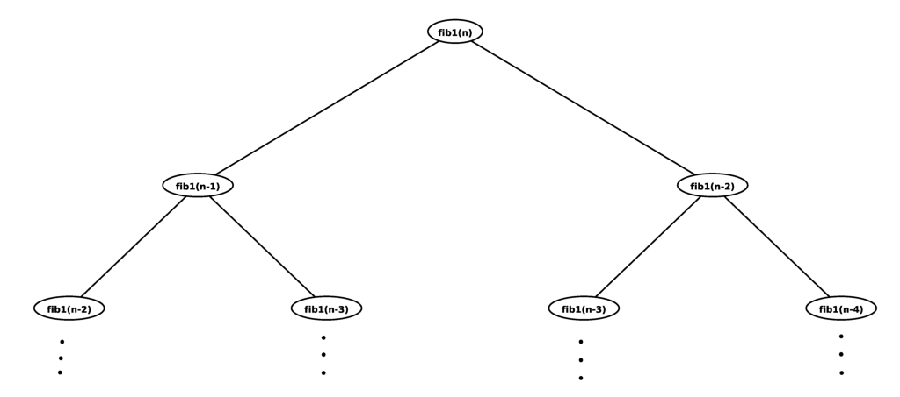
Im Falle der Fibonacci-Zahlen ist dies ein ungünstiger Algorithmus, weil viele Teilergebnise wiederholt berechnet werden (z.B. fn-2 und fn-3). Aber einige Probleme sind echt Baumrekursiv, z.B. das Ausrechnen der möglichen Züge beim Schachspiel.
- Es gilt folgender grundlegender Satz
Jeder rekursiver Algorithmus kann mit Hilfe eines Stacks in einen iterativen Algorithmus umgewandelt werden (d.h. mit einer Schleife statt einer Rekursion). Das bedeutet, dass rekursive Programme gleichmächtig sind wie Programme mit Schleifen (z.B. WHILE-Programme, siehe erste Vorlesung), d.h. gleichmächtig wie die Turing-Maschine. Die Komplexität des Algorithmus ändert sich durch die Umwandlung nicht.
Version 2: Umwandlung in einen iterativen Algorithmus mit Stack
def fib2(n):
stack = [n] # der Stack enthält als erstes Teilproblem das ursprüngliche Problem "n-te Fibonacci-Zahl berechnen"
f = 0 # f wird später die Lösung enthalten
while len(stack) > 0: # solange noch was auf dem Stack liegt, ist noch Arbeit zu tun
k = stack.pop() # Teilproblem von Stack entnehmen und lösen
if k <= 1:
f += k # entweder: Teilergebnis zur Lösung addieren (das war vorher der Rekursionsabschluss)
else:
stack.append(k-1) # oder: zwei neue Teilprobleme auf dem Stack ablegen
stack.append(k-2) # (das waren vorher die rekursiven Aufrufe)
return f
Version 3: Course-of-values recursion
Wie man unmittelbar aus der Definition erkennt, ist die Berechnung der Fibonacci-Zahlen Course-of-values rekursiv mit p=2. Eine entsprechende Implementation verwendet eine Hilfsunfktion, die immer die Ergebnisse der p letzten Aufrufe zurückgibt:
def fib3(n):
f1, f2 = fib3Impl(n) # Hilfsfunktion, f1 ist die Fibonacci-Zahl von (n+1) und f2 ist die Fibonacci-Zahl von n
return f2
Die Hilfsfunktion enthält jetzt die eigentliche Rekursion. Sie berechnet die Fibonacci-Zahlen fk und fk-1 aus den Zahlen fk-1 und fk-2:
def fib3Impl(n):
if n == 0:
return 1, 0 # gebe die Fibonacci-Zahl von 1 und die davor zurück
else: # rekursiver Aufruf
f1, f2 = fib3Impl(n-1) # f1 ist Fibonacci-Zahl von n, f2 die von (n-1)
return f1 + f2, f1 # gebe neue Fibonacci-Zahl fn+1 = f1+f2 und die vorherige (fn = f1) zurück.
⇒ Diese Implementation ist jetzt linear-rekursiv (aber nicht endrekursiv). Sie hat damit lineare Komplexität und nicht exponentielle wie die beiden vorherigen Versionen.
- Es gilt folgender Satz
Jede Course-of-values Rekursion kann in Endrekursion umgewandelt werden.
Version 4: Endrekursiv
Man gelangt von der Course-of-values Rekursion zur Endrekursion, indem man einfach die Berechnungsreihenfolge umkehrt: statt rückwärts von fn nach f0 zu arbeiten, arbeitet man vorwärts von f0 nach fn. Dazu muss der Hilfsfunktion eine Zählvariable übergeben werden, die angibt, wie viele Schritte noch bis zum Ziel fn verbleiben. Außerdem erhält die Hilfsfunktion die beiden vorherigen Fibonacci-Zahlen als Argument übergeben:
def fib4(n):
return fib4Impl(1, 0, n)
Die Hilfsfunktion:
def fib4Impl(f1, f2, counter):
if counter == 0:
return f2
else:
return fib4Impl(f1+f2, f1, counter-1) # f1 ist die letzte Fibonacci-Zahl,
# f1+f2 wird die neue Fibonacci-Zahl und wir müssen counter um 1 herunterzählen
# Endrekursion: fib4Impl() ist der letzte Befehl vor dem return
Beispiel mit n=3:
| f1 | f2 | counter | |
|---|---|---|---|
| fib4Impl 1.Aufruf | 1 | 0 | 3 |
| fib4Impl 2.Aufruf | 1 | 1 | 2 |
| fib4Impl 3.Aufruf | 2 | 1 | 1 |
| fib4Impl 4.Aufruf | 3 | 2 | 0 ⇒ Rekursionsabschluss ⇒ return 2 |
⇒ Ergebnis von fib4(3) (die 3. Fibonacci-Zahl) ist 2.
- Es gilt folgender grundlegender Satz
Jede endrekursive Funktion kann ohne Stack in eine iterative Funktion umgewandelt werden.
Bei einigen Programmiersprachen (z.B. Lisp, Scheme) wird dies von Compiler sogar automatisch erledigt (als Programmoptimierung, weil Iteration im allgemeinen schneller ist als Rekursion).
Version 5: Umwandlung in einen iterativen Algorithmus ohne Stack
def fib5(n):
f1, f2 = 1, 0 # f1 ist die Fibonaccizahl für n=1, f2 die für n=0
while n > 0:
f1, f2 = f1 + f2, f1 # berechne die nächste Fibonaccizahl in f1 und speichere die letzte in f2
n -= 1
return f2
Das ist genau das gleiche wie fib4Impl. Aber anstelle eines rekursiven Aufrufes werden einfach die Variablen f1 und f2 wiederverwendet (mit den neuen Werten überschrieben). Dies ist möglich, weil die originalen Werte nicht mehr benötigt werden, denn der rekursive Aufruf bei fib4Impl war der letzte Befehl vor dem return (Endrekursion!).
Beispiel für die Umwandlung von Rekursion in Iteration: treeSort
Input:
- ein balancierter Binärbaum, repräsentiert durch seinen Wurzelknoten root
- ein leeres dynamisches Array a, das später die sortierten Elemente des Baums enthalten wird
Aufgerufen wird:
treeSort(root,a) # kopiert Elemente des Baums sortiert in Array a
Wiederholung des rekursiven Algorithmus (vergleiche Abschnitt "Sortieren mit Hilfe eines selbst-balancierenden Suchbaums"):
def treeSort(node,a):
if node is None:
return
treeSort(node.left,a)
a.append(node.key)
treeSort(node.right,a)
Dieser Algorithmus ist baumrekursiv, was nicht weiter überrascht, denn die Rekursion dient ja zur Traversierung eines Baumes. In diesem Fall führt Baumrekursion nicht zu exponentieller Komplexität, weil die Tiefe des Baum nur O(log N) ist. Dadurch benötigt treeSort nur O(2log N) = O(N) Schritte zum Auslesen des Baumes (das Füllen das Baumes benötigt allerdings O(N log N) Schritte und dominiert den Algorithmus).
Die Implementation als iterative Funktion erfolgt mit Hilfe eines Stacks und einer Hilfsfunktion traverseLeft, die den Stack füllt:
def treeSortIterative(root, a):
stack = []
traverseLeft(root, stack) # fülle Stack mit den Knoten des linken Teilbaums von root
while len(stack) > 0:
node = stack.pop()
a.append(node.key)
traverseLeft(node.right, stack) # fülle Stack mit den Knoten des linken Teilbaums von node.right
Hilfsfunktion:
def traverseLeft(node, stack):
while node is not None:
stack.append(node)
node = node.left
Auflösung rekursiver Gleichungen
Um die Komplexität eines rekursiven Algorithmus zu berechen, müssen wir die notwendige Schrittzahl für ein Problem der Größe N bestimmen. Die Schrittzahl einer rekursiven Funktion setzt sich zusammen aus den Schritten, die in der Funktion selbst ausgeführt werden, sowie denen, die die verschiednenen rekursiven Aufrufe beitragen. Um dies allgemein auszudrücken, nehmen wir an, dass jeder rekursive Aufruf sich auf ein Teilproblem des originalen Problems bezieht. Die Größe des i-ten Teilproblems sei n/bi (wenn wir also auf dem Originalproblem weiterarbeiten, gilt bi=1), und es soll ai Teilprobleme dieser Größe geben. Dann wird die gesuchte Schrittzahl durch folgende Formel ausgedrückt:
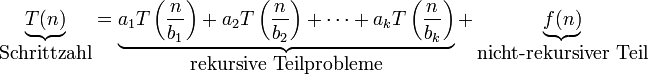
Bemerkung: Im allgemeinen arbeiten die rekursiven Aufrufe auf Teilproblemen ganzzahliger Größe. Daher muss man
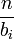
gegebenenfalls aufrunden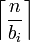
oder abrunden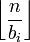
. Diese Rundungen spielen für die Auflösung der Formeln meist keine Rolle, weil die Rundungsfehler für große n vernachlässigbar sind.Rekursionsformeln dieses Typs haben wir z.B. im Kapitel Sortieren bereits behandelt. Hier wollen wir allgemeine Strategien angeben, wie man die rekursive Form dieser Formeln in eine explizite Form (die keine Ausdrücke der Art
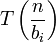
mehr enthält) überführt .Master-Theorem
Im Speziallfall k=1 (d.h. alle Unterprobleme haben die gleiche Größe) vereinfacht sich obige Formel zu:
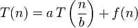
Hier gibt es mit dem Master-Theorem eine sehr allgemeine Regel, wie man die Komplexität des rekursiven Algorithmus in expliziter Form (genauer: in Θ-Notation) ausrechnen kann. Einen Beweis für das Master-Theorem findet man z.B. bei T. Cormen, C. Leiserson, R.Rivest: "Algorithmen - eine Einführung".
Wir definieren zunächst den Rekursionsexponenten:
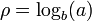
Ja nach dem Verhalten des nicht-rekursiven Anteils unterscheiden wir 3 Fälle
Fall 1:
Falls die Funktion f(n) sehr effizient ist, so dass für ihre Komplexität gilt
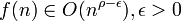
In diesem Fall dominieren die Kosten der Rekursion, und die Komplexität der rekursiven Funktion ergibt sich aus dem Rekursionsexponenten
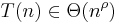
Fall 2:
Wenn die Funktion f(n) genauso effizient ist wie die Rekursion, wenn also gilt
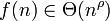
dann addieren sich die Kosten für f(n) und für die Rekursion, und wir erhalten:
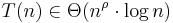
Fall 3:
Wenn die Funktion f(n) nicht sehr effizient ist, so dass für ihre Komplexität gilt
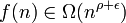
kann das Master-Theorem nur dann eine Aussage machen, wenn außerdem gilt
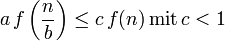
Jetzt dominieren die Kosten von f(n), und die Komplexität wird
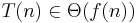
Beispiel: Merge Sort
Im Falle von Merge Sort wird das Problem in zwei gleiche Teile zerlegt, die beide rekursiv sortiert werden (es gilt also a=2, b=2). Das Zusammenfügen der beiden Teile erfordert Θ(n) Vergleiche. Wir erhalten also die Formel
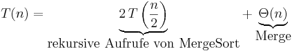
Für den Rekursionsexponenten erhalten wir
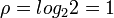
Mit f(n) ∈ Θ(n) = Θ(nρ) trifft Fall 2 zu, und wir erhalten für die Komplexität von MergeSort das bereits bekannte Ergebnis:
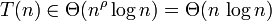
Fälle die nicht durch das Master-Theorem abgedeckt sind:
- wenn
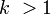
: rekursive Teilprobleme verschiedener Grösse - wenn
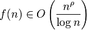
: Die Komplexität von f(n) liegt genau zwischen den Fällen 1 und 2. - wenn
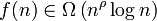
: Die Komplexität von f(n) liegt genau zwischen den Fällen 2 und 3. - wenn für alle c<1 gilt
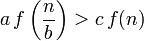
: Die Komplexität der Funktion f(n) auf den reduzierten Problemen ist zu groß.
Rekursionsbäume und Substitutionsmethode
Wenn das Master-Theorem nicht anwendbar ist, muss man die Rekursionsformel selbst auflösen. Dies gilt zum Beispiel, wenn der Algorithmus das Problem in zwei ungleich große Teile zerlegt. Wir betrachten das folgende Beispiel, bei dem das Problem in Teile der Größe 1/3 und 2/3 zerlegt wird und das Zusammenfügen der Teile c*n Schritte erfordert:
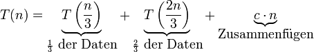
Wir bilden zuerst den Rekursionsbaum dieses Problems, wobei für jeden Knoten die Größe des Teilproblems angegeben ist, das dieser Knoten lösen muss:
n
/ \
/ \
/ \
/ \
/ \
(n/3) (2n/3)
/ \ / \
/ \ / \
/ \ / \
(n/9) (2n/9) (2n/9) (4n/9)
Jeder Knoten ruft rekursiv seine Kindknoten auf und fügt dann deren Teilprobleme zusammen. Wir berechnen den Aufwand, den allein das Zusammenfügen auf jeder Ebene des Baumes verursacht. Auf der obersten Ebene (Ebene 1) gibt es nur ein Teilproblem, und der Aufwand ist c*n. Auf Ebene 2 haben wir zwei Teilprobleme mit Aufwand
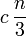
und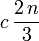
Der Gesamtaufwand für das Zusammenfügen auf Ebene 2 ist die Summe dieser Ausdrücke, wir erhalten also wieder c*n. Für Ebene 3 gilt wiederum
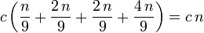
Offensichtlich gilt also für alle Ebenen, dass das Zusammenfügen der Teilprobleme insgesamt c*n Schritte erfordert. Zur Berechnung des Gesamtaufwands müssen wir nun noch die Anzahl der Ebenen, also die Tiefe d des Baumes, schätzen. Die Rekursion muss spätestens dann enden, wenn ein Teilproblem der Größe 1 erreicht wird, weil dies nicht weiter zerlegt werden kann. Die Rekursion endet also, wenn
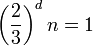
.
Auflösen dieser Formel nach d ergibt
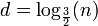
Wir leiten daraus die Vermutung ab, dass für die Komplexität unseres Algorithmus gilt
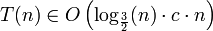
Nach den Regeln der O-Notation vereinfacht sich dies aber zu
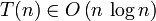
Diese Vermutung muss aber noch formal bewiesen werden (der Rekursionsbaum reicht als Beweis nicht aus). Der Beweis erfolgt durch die Substitutionsmethode. Das bedeutet, dass wir unsere Vermutung auf der rechten Seite der Rekursionsformel einsetzen und beweisen, dass eine wahre Aussage herauskommt. Für hinreichend große n und hinreichend großes d kann die Vermutung geschrieben werden als
(wir haben hier willkürlich Logarithmen zu Basis 2 eingesetzt -- die Basis in der O-Notation ist bekanntlich beliebig). Einsetzen in die Rekursionsformel liefert
Durch Ausmultiplizieren der Klammern und Trennen der Logarithmen von Quotionten erhalten wir
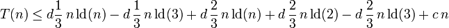
Unter Beachtung von ld(2)=1 können wir die Terme wie folgt zusammenfassen
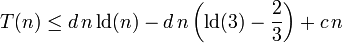
Falls unsere Vermutung richtig ist, muss die rechte Seite kleiner oder gleich sein. Um dies zeigen zu können, setzen wir
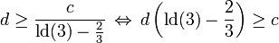
(nach den Regeln der O-Notation kann d beliebig gewählt werden, solange es hinreichend groß ist). Wenn wir die Konstante c mit Hilfe dieses Ausdrucks ersetzen, erhalten wir
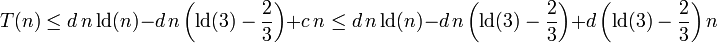
Die beiden letzten Terme heben sich aber gerade weg, und es bleibt übrig:
und somit
w.z.b.w.
Allgemein gilt, dass eine ungleiche Aufteilung in Teilprobleme die Komplexität eines rekursiven Algorithmus nicht verschlechtert, falls das Teilungsverhältnis konstant bleibt und außerdem der nichtrekursive Aufwand f(n) auf jeder Ebene in O(n) ist. Das trifft aber nicht zu, wenn das Problem immer in ein Teilproblem konstanter Größe und den Rest geteilt wird. Dann gilt mit einer Konstanten p
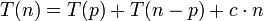
und das Teilungsverhältnis wird umso schlechter, je größer n wird. Dies ist gerade der ungünstige Fall bei Quicksort, und wir haben gesehen, dass sich die Komplexität hier auf O(n2) verschlechtert.